9 Hook Head
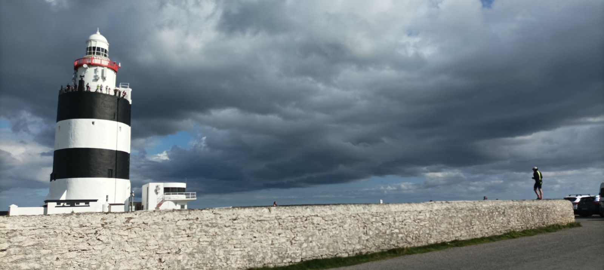
0810 Friday August 4, 2023
Graham sends me a picture of Hook Head lighthouse because he can see it across the water from his living room in Dunmore East, where he is summering with his wife, toddler and fresh bambino. In between the two landmasses is the large, n-shaped Waterford harbour, and the plan today is for the both of us to cycle from one lighthouse to the other and back, seventy clicks, up the Waterford side, across on the boola ferry, and then down the Wexford side to the Big Daddy of all lighthouses, Hook Head, which has been keeping her lit since like the twelfth century, anno domino.
I’m only halfway there, sitting in an Applegreen Service Station in Paulstown, Co Kilkenny, desperately trying to finish off a report for work by hashtag end of week. I zipped down here first thing, but I’m anxious to dunzo the work before meeting GK, as he is known, although you might know him from Graham’s Mustard, whose condiments have, since the peak of the recession, been adorning the plates of discerning food lovers. I had actually planned to stall it down last night but this report clogged up my plans, so now I’m sat in a Costa Coffee, the Marks & Spencer of cafés, where everything scores 6.8 out of 10. I always work well in their lower-upper-mid-quality decor, and the gentle lighting (ish) does be good for my delicate brain. I’m also glad of the break visually and intellectually, because the M9 is the most boring motorway in Ireland, and it breaks my heart to waste my good morning brain watching grass dry.
After the pit stop, a few hills emerge north of Waterford, and the rush-hour traffic turns out to be the most interesting part of the drive. My brain gets rebooted by the act of looking at something. I remember arriving in Paris once, after eight weeks in North Burgundy, the Leitrim of France, and the concrete jungle got my ruralized brain back moving. This is worth remembering, should we decided to move to the countryside to save cash and buy some space. By the time I slingshot out to Dunmore, I’m adequately stimulated, and I have fond memories of hanging out here with Grimey, aka the ‘late’ Brendan Walsh, who had to stall out to New Zealand forever. His soon-to-be-ex-partner wanted to go home home, so her and their chunfla went first, while Grimey came out in his own good time, to find that he had been dumped, and thus had to either go home alone or co-parent forever on the other side of their world. At Graham and Sophie’s wedding, in Dunmore, Grimey stopped the (after)party to give himself a eulogy of sorts, as he knew he wouldn’t be seeing anyone much again, and I really hope I haven’t lost the video I took of it.
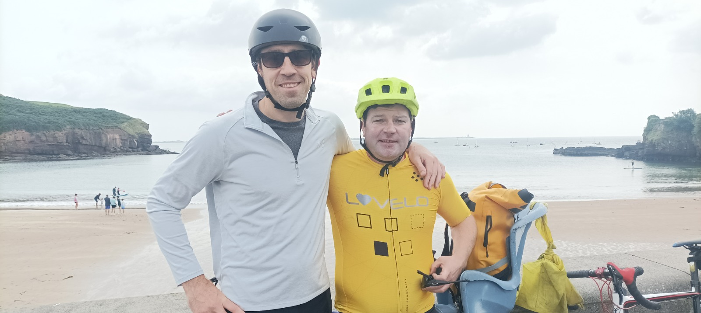
It’s nearly ten o’clock by the time I get to Dunmore, but GK’s rented bike still hasn’t even been delivered. Parking outside their gaff is a mare, with signs and traffic cones telling the tourists to Foxtrot Oscar. But the orkwordness brings the community together and immediately I’m being introduced to a neighbour with whom I’m going to be doing a parking switcharooney. I then whip Blue Thunder out of the boot, cos I still haven’t been arsed fixing my road bike, and I get down to some low-end maintenance. I’ve got bicycle shorts for Graham, which he’ll defo be needing, but he claims my spare jersey is too tight, and I’m disappointed cos I like to think that my five foot high, two foot wide physique would map neatly onto the chassis of his leanish two-ish metres. Both of us are, after all, fourteen and a half stone. Instead he goes all underarmer on the problem but I put my foot down on him taking a sweaty backpack. He’s never cycled anything like this distance, the furthest was a trip out to Howth and back with me about two years ago. So when Ralph comes to deliver the carbon-fibre bicycle, Sophie starts rinsing Graham, saying he’ll never be able for the journey. Ralph, who is a bit of a bog-man jack-the-lad, doesn’t even respond to her, and asks Graham if she’ll be quiet soon. He tells us a bit about the bike and I ask a question about the gears, to which he tells us that a little knowledge is a dangerous thing, demonstrating the bike mechanic’s knack of making cyclists feel like dodos. So I don’t bother asking him to help with my bike. Ralph legs it, I tighten my brakes and attach some cleat pedals. We’re on the road by 11, with me lugging beach towels in a bag on Blue Thunder’s child seat.
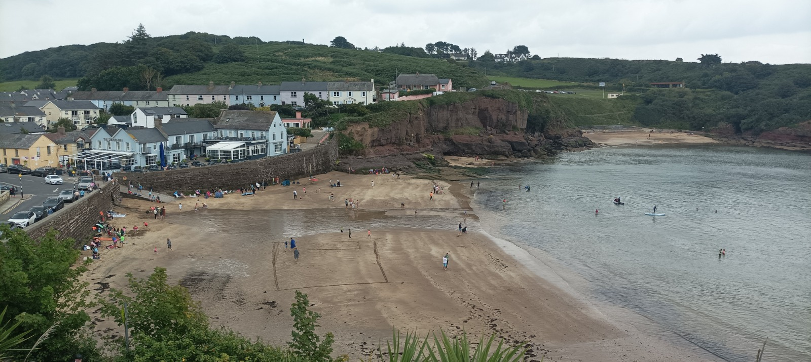
The start of the cycle is a punctuated affair, touring around Dunmore. GK’s gaff is down in the lower village, where The Strand Bar guards the striking beach, set between low cliffs to the left and a rising hill-cliff to the right, up to the main village. Strong walls keep the water at bay and when the tide is in, punters can walk straight in from the road. When the tide recedes, out come the buckets, spades and footballs. Graham and Sophie’s gaff is close enough that while you wouldn’t walk into the water before brushing your teeth, you could easily excuse your self from dinner, and sneak out for a quick swim while there others think you are downstairs in the Barryer. Downstairs, because their gaff has been inverted, with the bedrooms by the front door and the living space upstairs, affording sea views and Hook Head in the background.
We ask a couple of DryRobes to take a picture of us and the volunteer does the job at holiday speed. We scale the hill up towards the main village, and in the narrow park between the road and cliffs, several ageing ladies are learning tennis, with the Pet Shop Boys inexplicably blasting out. This is what it’s all about round here. Wholesome lower-upper-mid-level holidaying, which is as posh as it gets in Ireland. Long weekends away from the city, drinking Pyms if you have an in-the-know friend. Entire summers of golf, and not a whiff of amusements and arcades. Graham says he actually has a game of tennis lined up soon with a fella he met in the pub the other day, and I’m not surprised that he fits in here so well. The Good Life oozes out of him, and while someone did once call him a diamond-jumper faggot, he never brings any rigid-bodied stuffiness to proceedings, but rather an infectious lightheartedness, and no one makes me laugh more.
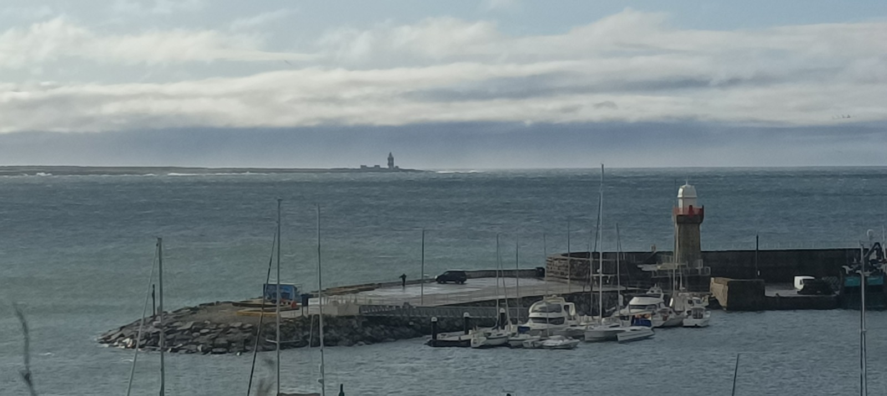
We descend to the well-maintained harbour, with its twelve-sided lighthouse, a neat little structure. I get Graham to read out the badly-written plaque while I scope out angles to photograph this lighthouse and Hook Head in the background. The theme of the plaque is that everyone should be saved at sea, friend or foe, and it’s a reminder of the beneficence inherent in lighthousery. Meanwhile, the sight of grown men processing oysters is a reminder of the physical hardship goes into earning a basic crust in a foreign country. Once the photoshoot is over, we are on the road proper, doubling back on ourselves before exiting on an eliminator hill, as Graham calls it. Of course, my front derailleur fails on me so I’m on the side of the road, putting it back together and I’m delighted to see he has stalled the ball for me at the top - cos there are plenty who wouldn’t. But I’m even more delighted that he has had no trouble with the climb, as neither of us is sure how able he will be for the cycle. We’ve played five-a-side with him for years, on and off with our mates, and he’s not a mechanical engine-room player like me, of the kind that translates naturally into the workaday nature of cycling. Graham’s always on a wing or up front, where his tekkerz and micro-explosiveness can burst in and out of the action. The land undulates all the way to Passage East on the quiet roads and he is shocked by the speed of the descent into Woodstown as he adjusts to this kind of bike. On the flatter sections, there is a little time to yap and talk about the plague of house prices, as both of us are still renting in Dublin with two young children. We stop off now and then to admire a fine lawn or flowery garden, and we take snaps as we enter the village of Crooke.
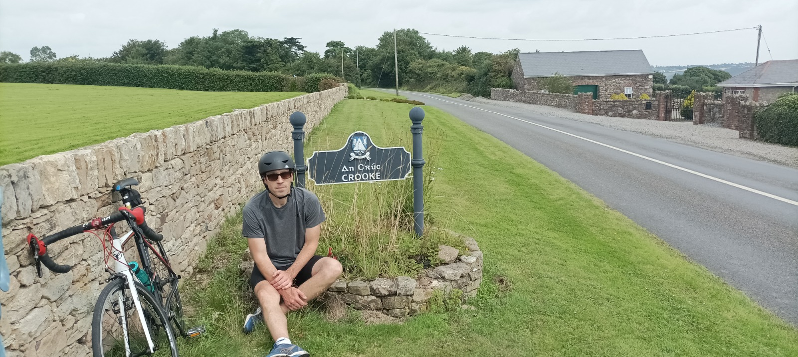
Later on, our tour guide in Hook Lighthouse tells us that during the 1649 siege of Waterford Oliver Cromwell used to ask his troops to take it by Hook or by Crooke, meaning from the peninsula east or west of the sea lough. This is believed to be the the origin of the phrase, but it turns out, the phrase is actually recorded from 1380 in the writings of John Wycliffe, the great pre-Reformation translator of the Bible, so it was long in existence. Looking at Google’s n-gram viewer, which lets us track phrase usage in their library of yoinked books, in the print era, we can see a major spike in late 1620’s. This was a little before Cromwell, after whom so many Irish boys have been named in recent years, was in his destructive pomp. My feeling is that Cromwell’s crew possibly knew the phrase already, and would have had serious lolz in mapping it to the task at hand.
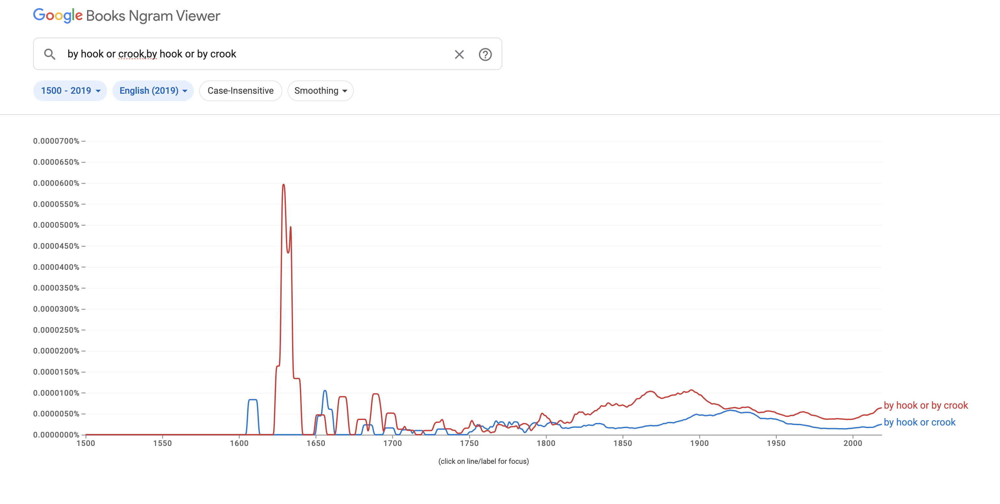
The main road on the Waterford side of the harbour is mostly set back from the sea lough because of sand deposits on this side of the water, and it is only after descending to the picturesque fishing village of Passage East that the history of this area becomes easier to view. You can see several settlements at once, nestled into coves among the cliffs, like a cloudy Cinque Terre. Less than a kilometer across the water is the tiny village of Ballyhack, to which the ferry shuttles back and forth all day long, and just south is the larger Arthurstown, set in a bigger bay. We miss one departure but only have to wait twenty minutes for the boola boat to come back and collect us. Time enough for us to have a few proper lolz and for me to monster the fig rolls, to Graham’s horror. It’s four nicker return for cyclists and the weather-faced ticket collector tells us that a quite a few people commute into Waterford City from the Wexford side of the harbour. This is good intel, because I could see myself living round here, in a village by the sea, with a city nearby for jobs and coffee. Graham is wondering if I’d move to Dunmore East, but it’s too dear for somewhere so far away, and probably a bit too nice for me. The kind of place that people with money move to for The Good Life. I’d rather arrive somewhere cheaper and scaldier, and gamble on living through its growth, with a cheap enough mortgage, rather than pledging myself to the proverbial man until the day I pretty much die. Across the water in Ballyhack, Graham grabs fluids in the shop while I needlessly scale the fourteen percent hill and have a quick bit of micro-bant with the locals. We push back along the coast to Arthurstown and Duncannon to the south. These towns are on the Norman Way, a Wexford-based tourist trail which focuses on the very visible ruins of that hybrid culture which dominated these parts in the late Middle Ages. The presence of such ruins, dotted along the peninsular coastline of South Wexford, makes it easier to reimagine the past, and later on our tour guide reconstructs that life for us a little.
Once we get to beach town of Duncannon it’s me who knows the way better because I was here last year with the fam, on a one-night camping trip, testing out whether we would enjoy the misery. In theory we did, but the tent wouldn’t stay up and my wife was freezing her pregnant tits off so the whole hashtag experience wasn’t the Kanye West. Of course, I jumped on the Paul van early in the morning and took the coast road to Fethard-on-Sea, but guilt got the better of me and I didn’t cycle the whole peninsula to Hook Head. That missed opportunity was something that sowed the seed for the current adventure. A week later I was cycling to Poolbeg Lighthouse and starting this book. The road rises out of Duncannon and Graham is disappointed that it hasn’t flattened off yet. He’s used to looking at the long, flat, treeless peninsula from the other side, with Loftus House sitting exposed on its Tobler. Apparently it is going to be turned into a boozer, and Grahams says his in-laws are looking forward to boating over from Dunmore for a few scoops. I think we’re both starting to realize that we’ve been missing out on a whole extra realm of travel.For now though, we actually have a few clicks to go before hitting the strange peninsula. We stop off to gawk at a ruined church and then take on the headwind on the long straight road to the lighthouse, with the sea nearby on both sides. Graham is starting to worry that he won’t make it home because his legs are screaming.
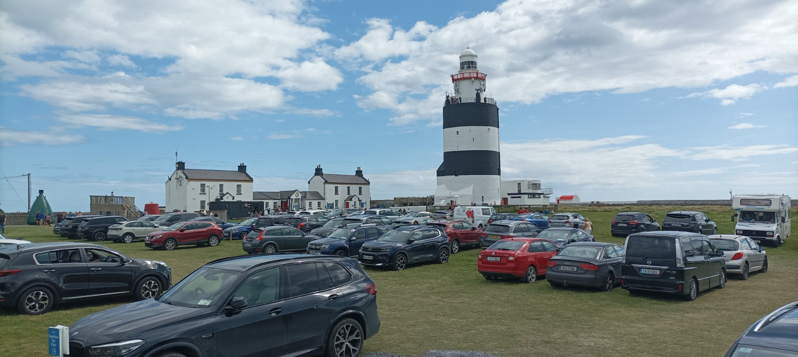
I’m shocked on arrival to see that the lighthouse campus is jammers, and the familiar lighthouse loneliness has been replaced by modern man on tour. Cars are parked inside and outside the walls; camper vans occupy micro-peninsulae along the cliffy edges. Kids play in a boat-shaped playground, and a real-life pirate wanders among the picnic benches looking to dazzle the sprogs. Bikers huddle near a supposed rack for push bikes, but it’s one of those knee-high jobbies into which you wedge your back wheel, waiting for it to topple and buckle, while your front wheel gets optionally stolen, so I’m having none of it. GK is in getting the Wilsons for an upcoming tour, so I ask a grumpy attendant where else I can park the bike. He assures me there’s a chain behind a big metal buoy but I can’t find it so I lock the bikes to a signpost.
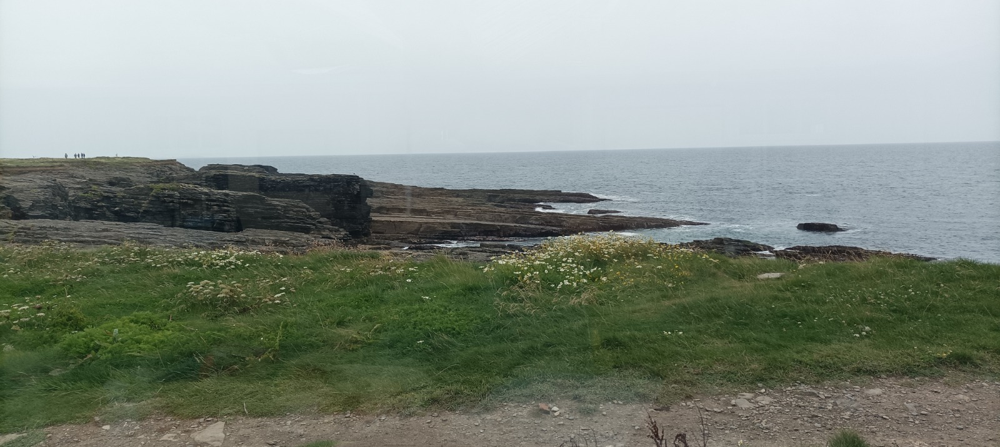
We’ve got 45 minutes to kill before the four o’clock tour, and it’s time to refuel. Graham had originally scoped out a fish restaurant for the return leg, but we need to take the L on that because needs must. I grab a plain pizza for a tenner in an outdoor van, and Graham comes back to tell me that’s he’s been unreliably informed that the E16.50 prawn sandwich is the bees knees. It turns out there’s a cafeteria inside, with views to match the price of the sambo. I open up my pizza, unload my pockets, and we kick back to reflect on a great day out so far, although I’m half-expecting some busybody to come and kick me out for bringing in my own food. And sure enough, some Battleaxe does barge in the door, making an urgent appeal to the owners of the two bicycles locked outside, as though we had double parked a camper van on top of an ambulance. She really wants it and she’s picked a fight with the right man because I’m having none of her bolloxology. I tell her, indignantly, that never in a life of locking bicycles to lampposts have I had trouble from anyone, and she’s like People can’t read my signpost. So I have to stall it outside and it’s clear that she has already made a scene out there because there’s a handful of onlookers ready to see the guilty party. Thankfully, there’s one lady who has also never seen anything like it, which calms my blood a bit, but there’s also another member of staff, male, early twenties, well built, and he thinks I must be a career criminal. I ask him why I can’t lock the bikes there and he says it’s the rules. I ask him why, but that’s above his pay grade. He’s starting to get thick with me and I remember how my wife always knows when people aren’t worth fighting with, so I ease off and cool my jets. But you can feel the siege mentality of the staff, dealing with the public all day long, and at last they have a scapegoat for their collective seething. The lad shows me to the famous chain beside the buoy, but it’s basically a metal shoelace behind the wall, dating from a buoy-gone era, and you’d sooner chew it off with your teeth than break my bike lock with an angle-grinder. I saunter back in to GK, with a prawn-sandwich eating grin all over his Brendan, and the two of us giggle like schoolgirls.
The lighthouse itself is huge, thick-set like a one thousand-year-old tree, except painted in giant black and white hoops. The walls are twelve feet deep at the base with tiny windows, and a winding staircase spirals around what is basically a medieval apartment block, with three circular, vaulted halls stacked on top of each other. The lighthouse keepers used to live in here until the nineteenth century, and monks before them, along with other fiends looking for trouble, warming themselves from fireplaces the size of a king-size bed. The ancient tower is seventy-two feet high and plonked on top of it is a modern lighthouse, the usual white with red trimmings, and a spinning light whose power cannot be appreciated by day, unless you see it in a dark room, which we can as part of our tour. The ground floor of the lighthouse used to be a coal storage room, with walls and ceilings as black as a fireplace. In the middle is a disused Fresnel lens, the beautiful chiselled sphere which lighthouses have been using to refract light since the nineteenth century, sending out those iconic spinning beams of light. Our guide spins it, like the Alberto Pomodoro sculptures in Trinnerz, The Vatican and elsewhere, and the lens sends out a bright blue beam around the coal-blackened walls of this room. I’m glad I have my Irlen lenses on because even though I look like an obviously knob, it’s good to be protected a little from this spinning strobe light which could (and should) illuminate a techno festival. The lens upstairs, we are told, is much bigger than this one which has been taken from another lighthouse, presumably replaced by a scutty LED light. Clearly this is what Messrs Murphy, the birdspotters in St John’s Point, were harping on about. In front of me is their so-called Rolls Royce, a truly beautiful piece of engineering, and the people of Killough want to keep it spinning in their lighthouse, rather than replacing it with some Ford-like functionality to save a few shekels.
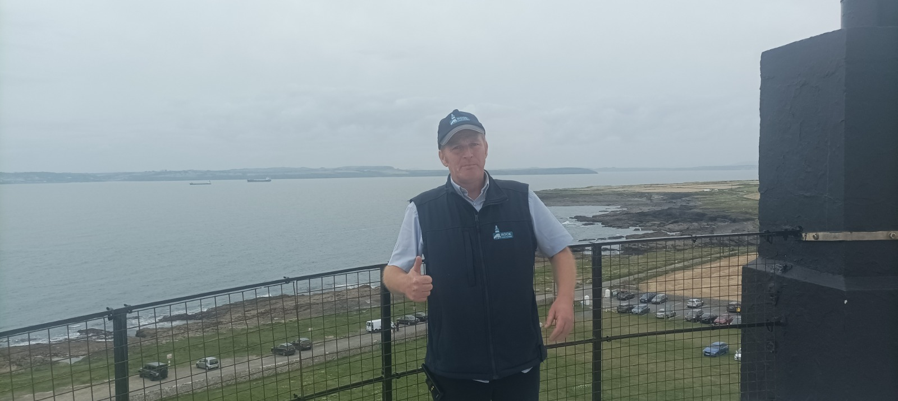
There’s a glorious new viewing room built low down on the landless side, with a 270 degree arc of windows, and our tour starts here with John, who explains, in his curious accent, that this area is known as the graveyard of a thousand ships. This is where four bodies of waters meet, making it the third most dangerous spot in the world, after Cape Horn and the Cape of Good Hope. To our right slash south-west are the Celtic Seas and Atlantic Oceans, although I don’t understand where one ends and the other starts. To our left slash North-East, is St George’s Channel, bringing Atlantic-bound ships from Wales and England. Our guide reminds us that emigrants from these lands would have passed by here, including the Titanic, which is logged in the lighthouse’s notebooks. He has a knack of seeing the big picture in the little details. The ships connect Old World emigrants to the New World tourists here today. The medieval knight, William Marshall, who built this lighthouse and later signed the Magna Carta, is actually a forefather of modern democracy. The New Ross tapestries are the Norman way of taking selfies, and the young children in the tour are the inheritors of a venerable oral culture which we adults must strive to pass on. John’s monologues are delivered at 2X speed with silence trimmed, doubling his value, although it’s probably heavy going for non-native speakers. The tour ends on top of the lighthouse with panoramic views and we thank our guide, before extracting a few bonus stories from him on the way down, when really he needs to unwind. It’s a tiring job and his voice is not yet ready to relax. I loved being a tour guide but the comedown is tough and booze is an easy solution. I also hated giving the same tour twice in one day because I could l never remember if I had told that story already and my brain would frazzle. My cache memory needs to be wiped before I can repeat the act. I was lucky because I’d have the Colosseum for breakfast, the Vatican for lunch and sometimes the centre of Rome in the evening. Or two thereof. But in a place like this there is only one tour to give, on repeat, and it must be grinding. All the same, I resolve to come back later this weekend with my family.
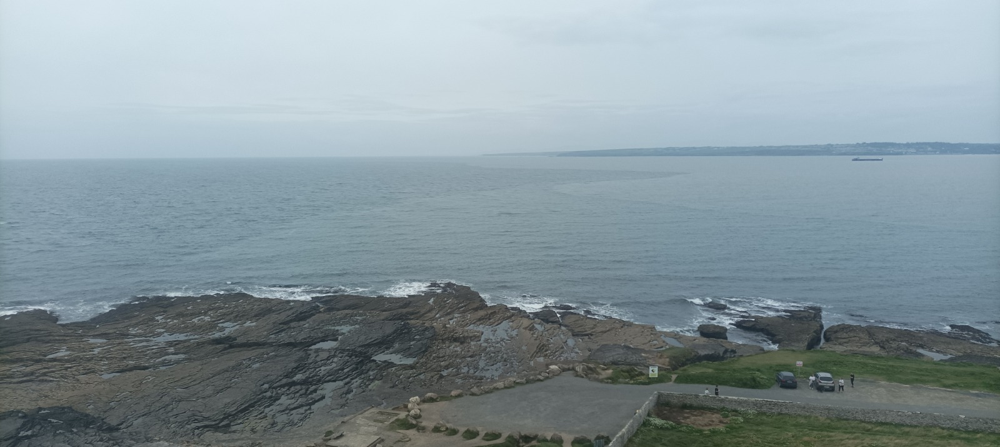
The trip home is a gentler affair with the wind on our backs now, and this time we take a detour to the East of the peninsula, via Hookless Village, Baginbun Beach and Fethard-on-sea. I want to check out some holiday homes for sale in a complex where, for some reason, there are like five for sale. I don’t know whether it would be feasible to raise a family all year round in a remote place like this but I want to get the vibe, so we go in for a quick spin round. I really like the set up, with the houses being detached yet connected by the large open lawn on which they sit. This looks ideal for kids to play while remaining in view. It’s also easy to talk to anyone so I approach a middle-aged man out painting his walls, which is something you’d want to enjoy in a sea-swept place like this. He’s got kayaks on his wooden balcony and I tell him I’m interested in one of the gaffs for sale over there. The wife comes soon after and we quickly get the vibe that they’ve had enough of the place. There’s mention of a nasty neighbour and I could do without another one of them. Meanwhile, The Ukraines have all moved in to the rental houses on the other side and now there’s no tourists, no one to bring cash in to the area, and the nearby boozer is dúnta. They have a face of regret, of being stuck here now, and it’s clear they don’t recommend the place.
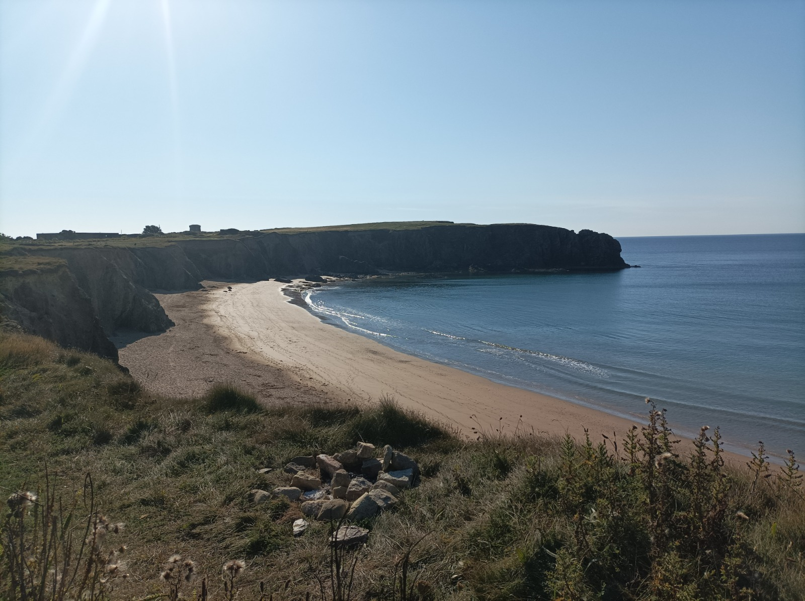
It’s a few clicks along the coast towards Baginbun beach, a place that seems to be gathering traction, but beside it is the even more beautiful Carnivan Bay, a surfer’s beach which is not safe for swimmers. We sit on the bench and admire the glorious view, where the turquoise colour of the water remains apparent despite the total cloud cover. A couple of days later, during my second visit to Hook Lighthouse, another guide tells us, with heartbreak fresh on his face, that he put this bench here, to remember his wife who died. They would come here, despite her condition, and she always said there should be a bench. We pop down to Baginbun on the other side of the headland and its mere nine-out-ten-ness seems like a let down after Carnivan. I love this beach and came here thrice within 30 hours last year. Once to check it out with the family, once on the bike the next morning as an endpoint, and again that afternoon for another family day out. I seldom rush back anywhere, but this place is special. The beach is a cosy cove of five hundred odd meters, with little grassy cliffs behind, adding the green and brown you never knew you needed at the beach. It’s big enough to have space but small enough to force interaction betwong everyone, adding atmos to the gaff. I can’t stand big fuckoff beaches like Portmarnock and Donabate where the endless space recommends people run away from each other. I want people on top of me, like in a hostel, where you can choose between getting on with them or being a weirdo on your Tobes. Far too much of modern life accommodates reclusiveness, with everyone boxed off in their rooms and their cars and their little bubbles. The beach is also sloped, meaning the tide doesn’t go far out and your kids don’t edge off to the horizon. The only work-ons are some rocks and seaweed in the water at the entrance end, and we make our way to the far end. Another striking feature is that people wallop sliotars about, as if there is no danger of taking someone’s head off. This just seems to be de rigueur here in the hurling counties. But it’s too cold today for hanging out and it’s swimmers only. The slope means that the water is instantly deep, preventing the death by a thousand cuts which you get wading through shallow water. It turns out that this is to Graham’s liking and he’s even more of a teabag swimmer than me. In and out. In and out. Out for good. The lack of sun makes it all the harder because there is no radiator to warm up your body, and with all the stopping and starting, it’s not like our core body temperature needs to be reduced. I’m delighted to lash on my spare cycling jersey, the one that didn’t fit Graham, and we are ready again the 30k cycle home.
But first, we stall the ball for a coffee in the little coffee hut, although Gk orders builders’ tea for reasons I have never understood. The beach facilities are all very new, only a year or two old, including a car park, a sauna hut and a kayak school, and it’s fun to watch the interaction and hierarchy among the workers as they have little to do on this cloudy evening. Like me, Gk thinks that kayak outings are a loadamebollix, because you’re always just doing pointless exercises and going nowhere. Ok guys, just paddle to the left there and we’ll all form a nice circle. He’s glad to hear that the kayakers in this place visit the caves. It reminds me of the dog which him and his dad got years ago, a hunting dog which was always on duty, watching. Neither of them would have any interest in a sit-around dog. Graham’s dad died maybe ten years ago, in his sixties, and it’s a big absence in his life, although he doesn’t exactly bang on about it. Since he died, Graham has just done a lot. He spent a year or two fixing up their dilapidated holiday home in County Clare, and he began a mustard business, just as his dad had been a sausage man. It’s been a long but independent struggle and it’s the reason why he can just show up here of a Friday. I wonder how much easier it would have been for him to have had that guidance. Then again, it might have been a disaster for all I know, with his aul’ fella lurking over his shoulder, clogging up his big chance to fail and grow, fail and grow.
On the way back, I’m bothered by the gap between the beach and the local village, Fethard-on-Sea, and the two places miss out on the synergy that comes from having one another, like in Dunmore East or Dun Laoghaire. It’ll be very interesting to see how this beautiful place grows in the coming years. The return leg to the ferry is an inland affair, and the villages contain little beyond gastro pubs for tourists and very old churches, another reminder of the deep history in this area. Graham gets to the ferry in Ballyhack before me cos I’m dillydallying and, as I cruise in, he has to get off the ferry which is about to leave. We sit it out over a quick pint, but GK doesn’t like mid-activity boozing so he’s understandably not happy when I call it and get another cheeky half, meaning we have to wait twice. His legs survive the last fifteen k of up and down, and both of us are delighted now to sit down for a celebratory scoop in Aggie Hayes pub, on top of the hill outside Dunmore. It’s been a great day out and I’m glad I’ve recruited a partner in crime for this brilliant way to see the world.